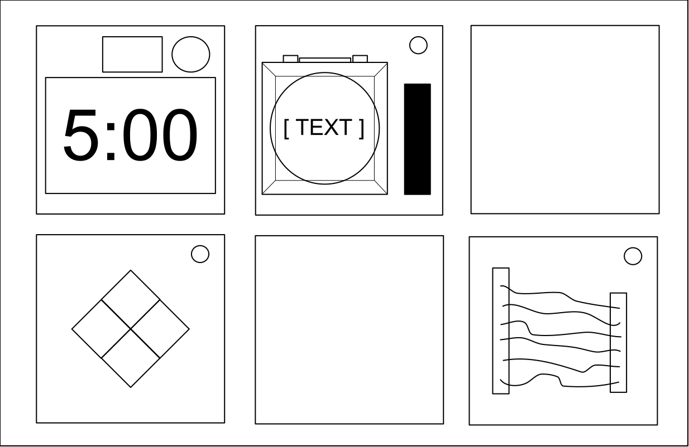
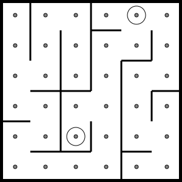
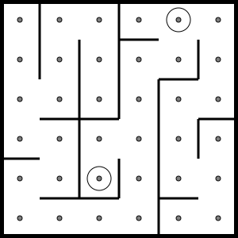

BOMB
DESARMERINGS
MANUAL
Version 1
Verifieringskod: 241
Revision 3
Översättning:
Stefan ’FappaR’ Engdahl
Korrektur:
Eric ’eric1894’ Odmyr
Översättningsversion: 1.8
Revision 3
Översättningsversion: 1.8
Välkommen till bombdesarmeringens farliga och utmanande värld.
Studera bruksanvisningen noga; du är experten. På följande sidor finns
allt du behöver veta för att desarmera även den mest förrädiska bomb.
Och kom ihåg — ett litet misstag och allt kan vara över!
En bomb kommer att explodera när dess timer når 0:00 eller när alltför många ’strikes’ har registrerats. Det enda sättet att desarmera en bomb är att avväpna
alla dess moduler innan tiden rinner ut.
|  Framsida |  Sida |
Varje bomb kommer att omfatta upp till 11 (elva) moduler som måste avväpnas.
Varje modul är separat och de kan avväpnas i valfri ordning.
Instruktioner för att avväpna moduler kan hittas i avsnitt 1.
”Behövande” moduler presenterar ett specialfall och beskrivs i avsnitt 2.

När den som desarmerar gör ett misstag kommer bomben att
registrera en ’strike’ som kommer visas på indikatorn ovanför
timern. Bomber med en strike-indikator kommer explodera på den tredje striken. Timern börjar räkna ner snabbare efter att en
strike har registrerats.
Om ingen strike-indikator är närvarande ovanför timern
lämnas det inget utrymme för misstag - bomben kommer att
explodera på den första striken.
Vissa avväpningsanvisningar kommer att kräva specifik information om
bomben, så som serienummer. Denna typ av information kan normalt hittas på
toppen, botten eller sidorna av bombens ytterhölje. Se bilaga A, B och C för identifieringsinstruktioner som kommer att vara användbara för att
avväpna vissa moduler.
Moduler kan identifieras genom en lysdiod i övre högra hörnet. När den här lampan lyser grönt så har modulen avväpnats.
Alla moduler måste avväpnas för att desarmera bomben.

Kablarna är elektronikens blod! Nej, vänta, elektriciteten är blodet.
Kablarna är mer som artärerna. Venerna? Strunt samma...
| 3 kablar: Om det inte finns några röda kablar, klipp den andra kabeln. Annars, om den sista kabeln är vit, klipp den sista kabeln. Annars, om det finns fler än en blå kabel, klipp den sista blå kabeln. Annars, klipp den sista kabeln. |
| 4 kablar: Om det finns fler än en röd kabel och den sista siffran i serienumret är udda, klipp den sista röda kabeln. Annars, om den sista kabeln är gul och om inga röda kablar finns, klipp den första kabeln. Annars, om det bara finns en blå kabel, klipp den första kabeln. Annars, om det finns fler än en gul kabel, klipp den sista kabeln. Annars, klipp den andra kabeln. |
| 5 kablar: Om den sista kabeln är svart och den sista siffran i serienumret är udda, klipp den fjärde kabeln. Annars, om det bara finns en röd kabel och det finns fler än en gul kabel, klipp den första kabeln. Annars, om det inte finns någon svart kabel, klipp den andra kabeln. Annars, klipp den första kabeln. |
| 6 kablar: Om det inte finns någon gul kabel och sista siffran i serienumret är udda, klipp den tredje kabeln. Annars, om det bara finns en gul kabel och det finns fler än en vit kabel, klipp den fjärde kabeln. Annars, om det inte finns någon röd kabel, klipp den sista kabeln. Annars, klipp den fjärde kabeln. |

Du kanske tror att en knapp som talar om för dig att trycka på den är ganska entydigt. Det är den sortens tänkande som får människor att explodera.
Se bilaga A för referenser om indikator-identifikation.
Se bilaga B för referenser om batteri-identifikation.
Följ de här reglerna i ordningen de är skrivna i.
Utför den första åtgärden som gäller:
Om du börjar att hålla ned knappen så kommer en färgad remsa att lysa upp
på modulens högra sida. Baserat på dess färg måste du släppa knappen vid
en specifik tidpunkt:

Jag är inte säker på vad dessa symboler är, men jag misstänker att de har
något att göra med det ockulta.
 |  |  |  |  | | |||||
 | |  |  |  | | |||||
 |  |  |  | |  | |||||
 | |  |  |  |  | |||||
|  |  | | | | |||||
 | | |  |  |  | |||||
| | | |  |  |

Detta är som en av de där leksakerna du lekte med som barn där du måste matcha
det mönster som visas, förutom att den här versionen är en billig kopia som antagligen köpts i en 10kr-butik.

Om serienumret innehåller en vokal:
| Blinkar rött | Blinkar blått | Blinkar grönt | Blinkar gult | ||
|---|---|---|---|---|---|
| Knapp att trycka: | Inga strikes | Blå | Röd | Gul | Grön | 1 strike | Gul | Grön | Blå | Röd | 2 strikes | Grön | Röd | Gul | Blå |
Om serienumret inte innehåller en vokal:
| Blinkar rött | Blinkar blått | Blinkar grönt | Blinkar gult | ||
|---|---|---|---|---|---|
| Knapp att trycka: | Inga strikes | Blå | Gul | Grön | Röd | 1 strike | Röd | Blå | Gul | Grön | 2 strikes | Gul | Grön | Blå | Röd |

Denna manick är som hämtad från en komisk sketch, som kanske skulle vara
roligt om den inte var ansluten till en bomb. Jag ska hålla mig kort, eftersom
ord bara komplicerar saken.
Baserat på displayen, läs etiketten på en särskild knapp och gå vidare till steg 2:
|
|
|
|
|
| ||||||||||||||||||||||||||||||||||||||||||||||||
|
|
|
|
| |||||||||||||||||||||||||||||||||||||||||||||||||
|
|
|
|
|
| ||||||||||||||||||||||||||||||||||||||||||||||||
|
|
|
|
|
| ||||||||||||||||||||||||||||||||||||||||||||||||
|
|
|
| ||||||||||||||||||||||||||||||||||||||||||||||||||
Genom att använda etiketten från steg 1, tryck på den första knappen som visas
i dess motsvarande lista:
| "READY": | YES, OKAY, WHAT, MIDDLE, LEFT, PRESS, RIGHT, BLANK, READY, NO, FIRST, UHHH, NOTHING, WAIT |
|---|---|
| "FIRST": | LEFT, OKAY, YES, MIDDLE, NO, RIGHT, NOTHING, UHHH, WAIT, READY, BLANK, WHAT, PRESS, FIRST |
| "NO": | BLANK, UHHH, WAIT, FIRST, WHAT, READY, RIGHT, YES, NOTHING, LEFT, PRESS, OKAY, NO, MIDDLE |
| "BLANK": | WAIT, RIGHT, OKAY, MIDDLE, BLANK, PRESS, READY, NOTHING, NO, WHAT, LEFT, UHHH, YES, FIRST |
| "NOTHING": | UHHH, RIGHT, OKAY, MIDDLE, YES, BLANK, NO, PRESS, LEFT, WHAT, WAIT, FIRST, NOTHING, READY |
| "YES": | OKAY, RIGHT, UHHH, MIDDLE, FIRST, WHAT, PRESS, READY, NOTHING, YES, LEFT, BLANK, NO, WAIT |
| "WHAT": | UHHH, WHAT, LEFT, NOTHING, READY, BLANK, MIDDLE, NO, OKAY, FIRST, WAIT, YES, PRESS, RIGHT |
| "UHHH": | READY, NOTHING, LEFT, WHAT, OKAY, YES, RIGHT, NO, PRESS, BLANK, UHHH, MIDDLE, WAIT, FIRST |
| "LEFT": | RIGHT, LEFT, FIRST, NO, MIDDLE, YES, BLANK, WHAT, UHHH, WAIT, PRESS, READY, OKAY, NOTHING |
| "RIGHT": | YES, NOTHING, READY, PRESS, NO, WAIT, WHAT, RIGHT, MIDDLE, LEFT, UHHH, BLANK, OKAY, FIRST |
| "MIDDLE": | BLANK, READY, OKAY, WHAT, NOTHING, PRESS, NO, WAIT, LEFT, MIDDLE, RIGHT, FIRST, UHHH, YES |
| "OKAY": | MIDDLE, NO, FIRST, YES, UHHH, NOTHING, WAIT, OKAY, LEFT, READY, BLANK, PRESS, WHAT, RIGHT |
| "WAIT": | UHHH, NO, BLANK, OKAY, YES, LEFT, FIRST, PRESS, WHAT, WAIT, NOTHING, READY, RIGHT, MIDDLE |
| "PRESS": | RIGHT, MIDDLE, YES, READY, PRESS, OKAY, NOTHING, UHHH, BLANK, LEFT, FIRST, WHAT, NO, WAIT |
| "YOU": | SURE, YOU ARE, YOUR, YOU'RE, NEXT, UH HUH, UR, HOLD, WHAT?, YOU, UH UH, LIKE, DONE, U |
| "YOU ARE": | YOUR, NEXT, LIKE, UH HUH, WHAT?, DONE, UH UH, HOLD, YOU, U, YOU'RE, SURE, UR, YOU ARE |
| "YOUR": | UH UH, YOU ARE, UH HUH, YOUR, NEXT, UR, SURE, U, YOU'RE, YOU, WHAT?, HOLD, LIKE, DONE |
| "YOU'RE": | YOU, YOU'RE, UR, NEXT, UH UH, YOU ARE, U, YOUR, WHAT?, UH HUH, SURE, DONE, LIKE, HOLD |
| "UR": | DONE, U, UR, UH HUH, WHAT?, SURE, YOUR, HOLD, YOU'RE, LIKE, NEXT, UH UH, YOU ARE, YOU |
| "U": | UH HUH, SURE, NEXT, WHAT?, YOU'RE, UR, UH UH, DONE, U, YOU, LIKE, HOLD, YOU ARE, YOUR |
| "UH HUH": | UH HUH, YOUR, YOU ARE, YOU, DONE, HOLD, UH UH, NEXT, SURE, LIKE, YOU'RE, UR, U, WHAT? |
| "UH UH": | UR, U, YOU ARE, YOU'RE, NEXT, UH UH, DONE, YOU, UH HUH, LIKE, YOUR, SURE, HOLD, WHAT? |
| "WHAT?": | YOU, HOLD, YOU'RE, YOUR, U, DONE, UH UH, LIKE, YOU ARE, UH HUH, UR, NEXT, WHAT?, SURE |
| "DONE": | SURE, UH HUH, NEXT, WHAT?, YOUR, UR, YOU'RE, HOLD, LIKE, YOU, U, YOU ARE, UH UH, DONE |
| "NEXT": | WHAT?, UH HUH, UH UH, YOUR, HOLD, SURE, NEXT, LIKE, DONE, YOU ARE, UR, YOU'RE, U, YOU |
| "HOLD": | YOU ARE, U, DONE, UH UH, YOU, UR, SURE, WHAT?, YOU'RE, NEXT, HOLD, UH HUH, YOUR, LIKE |
| "SURE": | YOU ARE, DONE, LIKE, YOU'RE, YOU, HOLD, UH HUH, UR, SURE, U, WHAT?, NEXT, YOUR, UH UH |
| "LIKE": | YOU'RE, NEXT, U, UR, HOLD, DONE, UH UH, WHAT?, UH HUH, YOU, LIKE, SURE, YOU ARE, YOUR |

Minnet är en bräcklig sak men det är allt annat också när en bomb
exploderar, så var uppmärksam!
Om skärmen visar 1, tryck på knappen i den andra positionen.
Om skärmen visar 2, tryck på knappen i den andra positionen.
Om skärmen visar 3, tryck på knappen i den tredje positionen.
Om skärmen visar 4, tryck på knappen i den fjärde positionen.
Om skärmen visar 1, tryck på knappen märkt ”4”.
Om skärmen visar 2, tryck på knappen i samma position som du tryckte på i steg 1.
Om skärmen visar 3, tryck på knappen i den första positionen.
Om skärmen visar 4, tryck på knappen i samma position som du tryckte på i steg 1.
Om skärmen visar 1, tryck på knappen med samma nummer som du tryckte på i steg 2.
Om skärmen visar 2, tryck på knappen med samma nummer som du tryckte på i steg 1.
Om skärmen visar 3, tryck på knappen i den tredje positionen.
Om skärmen visar 4, tryck på knappen märkt ”4”.
Om skärmen visar 1, tryck på knappen i samma position som du tryckte på i steg 1.
Om skärmen visar 2, tryck på knappen i den första positionen.
Om skärmen visar 3, tryck på knappen i samma position som du tryckte på i steg 2.
Om skärmen visar 4, tryck på knappen i samma position som du tryckte på i steg 2.
Om skärmen visar 1, tryck på knappen med samma nummer som du tryckte på i steg 1.
Om skärmen visar 2, tryck på knappen med samma nummer som du tryckte på i steg 2.
Om skärmen visar 3, tryck på knappen med samma nummer som du tryckte på i steg 4.
Om skärmen visar 4, tryck på knappen med samma nummer som du tryckte på i steg 3.

En föråldrad form av marin kommunikation? Vad händer härnäst?
Det är åtminstone det äkta morsealfabetet, så var uppmärksam så
kanske du kan lära dig något.

| Om ordet är: | Ställ in frekvens: |
|---|---|
| shell | 3.505 MHz |
| halls | 3.515 MHz |
| slick | 3.522 MHz |
| trick | 3.532 MHz |
| boxes | 3.535 MHz |
| leaks | 3.542 MHz |
| strobe | 3.545 MHz |
| bistro | 3.552 MHz |
| flick | 3.555 MHz |
| bombs | 3.565 MHz |
| break | 3.572 MHz |
| brick | 3.575 MHz |
| steak | 3.582 MHz |
| sting | 3.592 MHz |
| vector | 3.595 MHz |
| beats | 3.600 MHz |
Dessa kablar är inte som de andra. Vissa har ränder! Det gör dem helt annorlunda.
Den goda nyheten är att vi har hittat en kortfattad uppsättning instruktioner
om vad man ska göra åt det! Kanske för kortfattad...
| Bokstav | Instruktion |
|---|---|
| C | Klipp kabeln |
| D | Klipp inte kabeln |
| S | Klipp kabeln om den sista siffran i serienumret är jämnt |
| P | Klipp kabeln om bomben har en parallellport |
| B | Klipp kabeln om bomben har två eller fler batterier |
Se bilaga B för referenser om batteri-identifikation.
Se bilaga C för referenser om port-identifikation.

Det är svårt att säga hur denna mekanism fungerar. Ingenjörskonsten är ganska imponerande, men det måste funnits ett lättare sätt att hantera nio kablar.
| Röda kabelförekomster | |
|---|---|
| Kabelförekomst | Klipp om ansluten till: |
| Första röda förekomsten | C |
| Andra röda förekomsten | B |
| Tredje röda förekomsten | A |
| Fjärde röda förekomsten | A eller C |
| Femte röda förekomsten | B |
| Sjätte röda förekomsten | A eller C |
| Sjunde röda förekomsten | A, B eller C |
| Åttonde röda förekomsten | A eller B |
| Nionde röda förekomsten | B |
| Blåa kabelförekomster | |
|---|---|
| Kabelförekomst | Klipp om ansluten till: |
| Första blåa förekomsten | B |
| Andra blåa förekomsten | A eller C |
| Tredje blåa förekomsten | B |
| Fjärde blåa förekomsten | A |
| Femte blåa förekomsten | B |
| Sjätte blåa förekomsten | B eller C |
| Sjunde blåa förekomsten | C |
| Åttonde blåa förekomsten | A eller C |
| Nionde blåa förekomsten | A |
| Svarta kabelförekomster | |
|---|---|
| Kabelförekomst | Klipp om ansluten till: |
| Första svarta förekomsten | A, B eller C |
| Andra svarta förekomsten | A eller C |
| Tredje svarta förekomsten | B |
| Fjärde svarta förekomsten | A eller C |
| Femte svarta förekomsten | B |
| Sjätte svarta förekomsten | B eller C |
| Sjunde svarta förekomsten | A eller B |
| Åttonde svarta förekomsten | C |
| Nionde svarta förekomsten | C |

Detta verkar vara någon slags labyrint, vars design troligen stulits från
en bordstablett på en restaurang.


 



Lyckligtvis så uppfyller detta lösenord inte regeringens säkerhetskrav:
22 tecken, blandade versaler och gemener, siffror i slumpmässig ordning
utan några palindromer över en längd på 3.
| about | after | again | below | could |
| every | first | found | great | house |
| large | learn | never | other | place |
| plant | point | right | small | sound |
| spell | still | study | their | there |
| these | thing | think | three | water |
| where | which | world | would | write |

Behövande moduler kan inte avväpnas men utgör en
återkommande fara.
Behövande moduler kan identifieras som en modul med en
liten 2-siffrig timer längst upp i mitten.
Interaktion med bomben kan få dem att bli aktiverade.
Väl aktiverade måste dessa behövande moduler ses över regelbundet innan tiden går ut för att förhindra en strike.
Var uppmärksam:
behövande moduler kan återaktiveras när som helst.

Dataintrång är svårt! Nåja, vanligtvis i alla fall. Detta jobb skulle förmodligen kunna utföras av en enkel evighetsmaskin som trycker på samma knapp gång på gång.
Jag gissar att det här bara är tänkt att ockupera din uppmärksamhet,
eftersom detta annars är ganska sjabbigt konstruerad elektronik.
Onödigt komplicerat och oändligt behövande. Tänk om en sådan expertis
användes för att göra något annat än diaboliska pussel.
| X | X | X | |||
| X | X | X | X | X |
| X | X | X | |||
| X | X | X | X |
| X | X | X | |||
| X | X | X | X | X |
| X | X | X | |||
| X | X |
| X | |||||
| X | X | X | X |
| X | |||||
| X | X |
| X | X | X | X | X | |
| X | X | X | X |
| X | X | X | |||
| X | X | X | X |
X = Tänd LED-lampa
Märkta indikatorlampor kan hittas på sidorna av bombens ytterhölje.

Vanliga batterityper kan hittas i inneslutningar på sidorna av bombens
ytterhölje.
| Batteri | Typ |
|---|---|
 | AA |
 | D |
Digitala och analoga portar kan hittas på sidorna av bombens ytterhölje.
| Port | Namn |
|---|---|
 | DVI-D |
 | Parallell |
 | PS/2 |
 | RJ-45 |
 | Serie |
 | Stereo RCA |